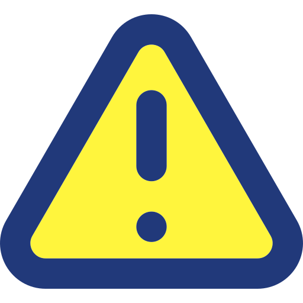

Home
Home à-propos
à-propos le serveur est toujour en dévellopement, mais la sortie est attendut dans le mois avenir!!!
LinésiaV4, un serveur Kit-map,
Linesia est un serveur Kit-map, avec des Item Moddé, une équipe a l'écoute des joueurs est des proposition ainsi que des critique pour pouvoir toujours s'améliorer